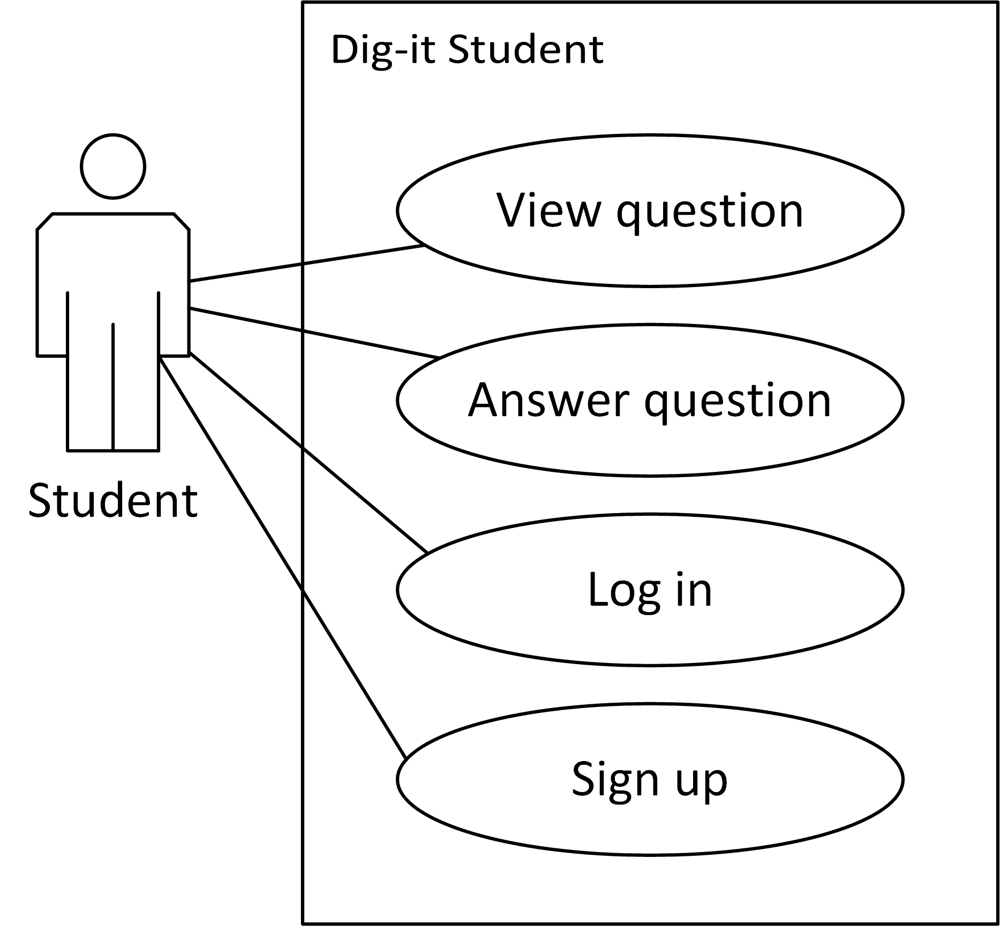
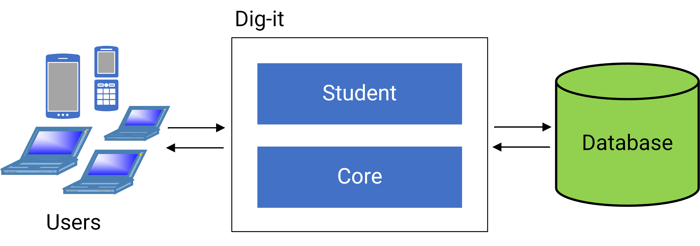
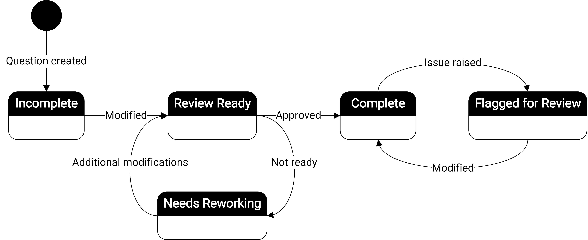
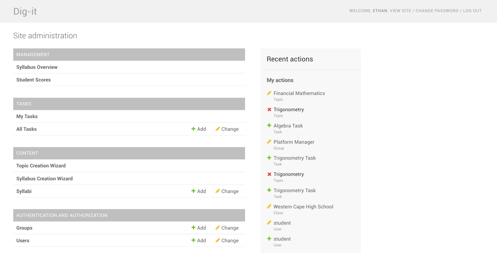
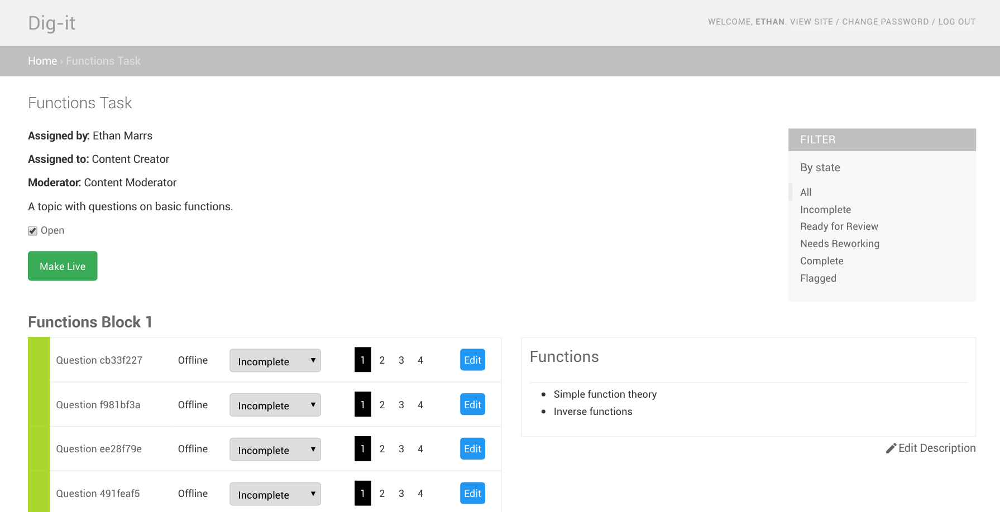

By Ethan Marrs
This paper presents the development of a prototype application for managing mathematical content. The project is based on Dig-it, Praekelt.org’s mobile learning platform. Dig-it is planning to scale nationally, and a prototype was created to trial new features that might enable the platform to sustainably manage content in future. Among many things, the paper discusses an approach to the design of an e-learning Content Management System, with emphasis on automating workflows and allowing for effective arrangement of syllabus content. This involved an aim to reduce the reliance on tools external to the platform. The project was evaluated using a few metrics, including a user evaluation using the System Usability Scale. The evaluation showed that the prototype successfully provided a way to manage mathematics content, and stakeholder feedback indicated that the prototype had met its functional requirements, providing ideas and approaches for future work on the Dig-it platform.
The education space has been a focus of computer science innovation for some time now. In South Africa, a number of initiatives have researched technology as a platform for learning – so called “e-learning”. These projects have differed greatly in scope and goals, with some operating as for-profit ventures while others are backed by Non-Governmental Organisations (NGOs). A common target of these projects has been STEM fields, particularly mathematics given South Africa’s problematic international ranking in the subject. This background has led to the creation of Dig-it, a non-profit mathematics platform operated by Praekelt.org and recently funded by Investec. Dig-it provides a mobi-site for high school students where they are provided questions on a weekly basis and rewarded with airtime for reaching certain goals. A common goal for students is answering more than 60% of questions correctly. Currently, Dig-it operates on a small scale with roughly 1500 active students using the platform from grades 10 through to 12.
In 2017, Dig-it is scaling to the national level, aiming to service over 100 000 students in 3 provinces. For a number of reasons, Dig-it’s current workflow and codebase need to be adjusted to cater for this expansion. The primary concerns regarding the current system are the creation of mathematical content, the management of content and curricula, and optimizing the delivery of this content to students.
The proposed solution was to create a prototype which demonstrates possible features for the project to scale in future. The prototype was built from the ground up, focussing on our areas of interest and research questions. This project is a proof of concept, and a potential reference design.
The primary aims of the project are to:
Given the software engineering nature of the project, design was an important aspect of the project’s planning and incremental improvement. Early on in the planning stages, it was decided that user involvement was key to the success of the project, and so a form of User-Centred Design was adopted. This required regular meetings with Praekelt.org stakeholders involving demonstrations, sketches, clarifications and discussions. Overall, the content management aspect of the project had three primary design focusses. The first was the technical design of the application, involving system architecture, design patterns and programming decisions. The second focus was on realising the user stories defined by stakeholders, and thus the information flows that are involved. The final focus was on the user interface and visual aspects of the system – how the design could best aid the user in constructing syllabi and content.
The design for the prototype is based on the idea that the structure of a syllabus should be determined by the weeks in a year. By using ISO week numbers (each week is numbered between 1 and 52, occasionally 53 in leap years) instead of specific dates, content can be reused in the next year with few changes to the underlying data. This means that a syllabus is made up of topics with specific start and end weeks. Topics are then broken into blocks, which are then associated with questions. Blocks are a week long, but could be of arbitrary length, hence their naming. Students will be delivered questions that are at most two weeks behind the current date, introducing the idea of a 2 week “moving window” of content. This helps prevent the predicament of students falling behind in the syllabus. The final concept introduced is that of a question creation task. This is a task set up to request the creation of questions for a given topic. This then encapsulates the content creation and moderation processes. The implementation of these concepts through Django models and hence database tables, is described visually in the model diagram, available in the online appendices.
The use cases for the Dig-it prototype were developed collaboratively with the Dig-it project manager and content uploader. Some use cases were identified through the scheduled project meetings, while others were identified during a specific use case session. The minutes of these meetings can be found online, alongside the output from the use case session. The new Dig-it workflow was designed alongside the use cases, and is described below. Two use case diagrams have been created to describe the requirements of the system. The first is the simplest, and describes the student’s view of Dig-it, the second use case diagram relates to the administration aspect of the system, and involves five key actors: syllabus creator, content creator, content moderator, project manager and time.
The prototype architecture is described in the figure below. Users interact with the Dig-it application, which interacts with a database. Dig-it has been structured to have two modules (or as Django describes them, “apps”). The “core” module encapsulates all the administrative features and the models for storing the data. The “student” module encapsulates all student-facing features such as answering questions and signing up on the platform.
To meet the design objective of automating aspects of the original system and unifying processes, a new workflow needed to be designed. An important part of this new workflow involves the state of questions. The figure below describes how questions can progress from the state of “incomplete” to “complete”. A question transitions between these states based on interactions between the content creators, content moderators and platform manager.
Praekelt.org almost exclusively writes software in the Python language for their projects. Thus, the existing Dig-it system, which was developed some time ago, made use of Python 2. Praekelt.org also makes extensive use of the Django Web Framework to speed up the software development process and provide a consistent technological base for their applications. Both project members have experience with Python and Django from past projects, and this was a natural choice for the development of the project. The Python/Django stack’s ability to enable faster prototyping and development was also deemed to be useful in this project. The latest versions of Python (version 3.5) and Django (version 1.10) were used. Given that the project is web-based, standard web technologies have also been used. This includes HTML, CSS and JavaScript. The stack used can also be said to allow for high portability, given that Django runs on Windows, MacOS and Linux.
Since the Dig-it prototype is primarily focussed on syllabus management, the student functionality is quite simple. Students can sign up, login and answer questions. The figure below shows the question screen students are presented. The delivery of questions to the user is much more complicated, although from the user’s perspective, it seems quite simple. The content delivery is discussed in Nathan Begbie’s side of the project, although it integrates with the overall system.
Managing the curriculum is done through a customised CMS that provides for standard Create, Read, Update and Destroy (CRUD) operations on stored data, and tasks specific to the platform. Syllabi are created through standard creation forms, and are linked up to grades and classes. Students are then allocated to classes. The syllabus creator can then create topics for the syllabus, which autogenerates the required number of questions. A task can then be made to request the creation of content, assigning moderators and creators to fill in the content for the blank questions. The figure below shows the administration home page for Dig-it.
Content moderation occurs on the question creation task screen displayed in the figure below. Both content creators and content moderators will use this to navigate the content creation process. This screen displays all the questions in the associated topic, with descriptions for each week of work and the status of each question. From here, users can edit each question’s mathematical content, answers etc.
Throughout the project, we received feedback on our progress. Mainly, this related to the flows within the application, and the tasks that needed to be completed. On more than one occasion, our meetings indicated that some of the functionality was confusing to use. This was one of our key findings, that although curriculum information appears easy to organise from a high-level perspective, the interface quickly becomes confusing for end users. We also received feedback that the more visual aspects of the system (such as timelines and year overviews) were well received, since the current system mostly uses basic CRUD forms. A final demonstration of the project and usability session was conducted with stakeholders at Praekelt.org. We made use of SUS to structure this process. Three parties participated in the SUS evaluation after working through some scenarios on the platform. The evaluation resulted in a SUS score of 81.6, which is generally considered to be above average. While the SUS score is only one metric, it does appear to suggest that the application was largely usable for its intended purpose.
A prototype system for managing mathematical content was developed in an attempt to address some of the issues currently facing the Dig-it platform. A special emphasis was placed on reducing the reliance on tools external to the platform, and improving the arrangement of curricula for students. With regards to our research questions, it appears as though a custom CMS can certainly reduce the reliance on external tools, especially when their current usage is limited. For Dig-it, this included spreadsheets and task tracking software. The reliance on email as a communication tool was also reduced, but it was noted that email is used elsewhere in the organisation, and so it would be likely users will continue to fall back on its usage, regardless. Visual elements in the prototype were well received, especially when they provided an overview of Dig-it content that improved upon the usage of spreadsheets. Hence, timelines and overview screens proved to be the most effective in conveying complex curricula information to administrators. The new approach to the design of the system, using the weeks of the year instead of fixed dates, allowed for the structuring of syllabi such that questions could be made available to students as soon as they were completed. This new structure did result in some confusion with the CMS interface however, despite iteration on the initial designs. This indicates that there is room for improvement in this area. Somewhat unexpectedly, the interface ended up being quite challenging both from design and technical perspectives. Ultimately, we believe that we have met our overall aim for the project, to help provide new ideas and approaches for the Dig-it platform to scale effectively in future.
This paper has focussed mainly on the content management implications for Dig-it in future. Through the implementation of a prototype, it seems clear that there are several possibilities for streamlining the platform and improving operational efficiency. One aspect of this is automating the creation of mathematical content. For a small platform, it would be possible to continue using a variety of tools to manage content creation, but it appears as though this process would become increasingly difficult as the platform scales. The second aspect is how this content is managed sustainably. This prototype has demonstrated that incorporating functionality for content moderation is useful to the administrators of the platform, and that arrangement of questions on a single system can improve the usability of the overall platform. This may be an area of future work for the project. It can also be said that features that were specifically determined as out of scope, might be an area of future work for the prototype. This could include integrating leaderboards and gamification into the new application design and workflow. The project also devised a method to allow for questions to be delivered to students without manual intervention. While this appeared to work in our testing, more research needs to be done to ascertain whether this is a suitable approach for a production system.
| File | Description | Format |
|---|---|---|
| Evaluation Session | ||
| EvaluationSession.pdf | The slideshow presented to the client at the usability session | |
| sus.pdf | System Usability Scale questionnaire | |
| scenarios.pdf | The scenarios and roles presented to the client for the usability session | |
| Results.xlsx | System Usability Scale results from evaluation session | xlsx |
| ClientDemo.mp4 | Video recording of the demo session with the client | mp4 |
| Design | ||
| design_output.pdf | A document that contains images of the design process for Dig-it 2.0 | |
| digit.png | Model diagram for the Dig-it Django application | png |
| use_case_session.jpg | A picture of some of the output from the use case session | png |
| workflow.png | A diagram depicting the current workflow of the Dig-it system | png |
| workflow_new.png | A diagram depicting the new workflow for the Dig-it 2.0 prototype | png |
| Testing | ||
| test_all.png | Screenshot of all Digit2 tests. | png |
| test_core.png | Screenshot of test coverage report for the core module. | png |
| test_student.png | Screenshot of test coverage report for the student module. | png |
| travis_ci.png | Screenshot of continuous integration testing on Travis CI. | png |
{kind=link}
{kind=link}
{kind=link}
{kind=link}
{kind=link}
{kind=link}
{kind=link}
{kind=link}